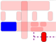
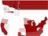
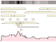
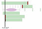
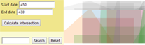

A pragmatic data model, D3 layout, and Python functions
for representing complex and/or uncertain periods and events. [ in progress ]
There are several examples demonstrating a new timeline layout built upon D3.js:
All timespan types (singular, multi-part, cyclical, durations, etc.); part-of and participates relations.
Lifespans of 50 US states linked to a map.
Stacked layout displays timespans as geometric figures; temporal density band and profile.
Simple example rendering Topotime data written as CSV.
Our Python functions generate "temporal geometries" with the help of Shapely.
These are rendered to a browser with D3 in this sandbox web page, providing some basic query capability.
To simplify things, we will maintain documentation on the Topotime Github site ...
...with an occasional related essay or technical paper here or elsewhere, e.g.